AoU Architecture
Architecture
This section describes the block diagram of AOU_CORE.
Block diagram
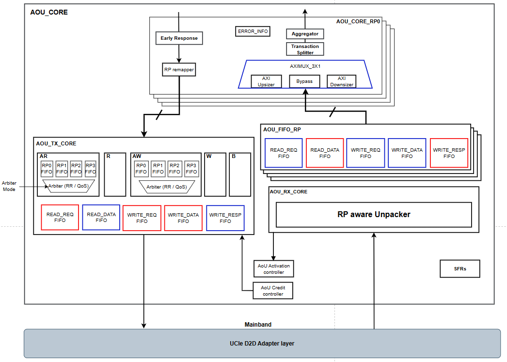
Figure 1 shows block diagram of current AOU_CORE. The AXI interface supports both Manager and Subordinate transactions for message transmission and reception. AOU_CORE may issue AR and AW requests to the remote die using the local bus width. Consequently, R-data from the remote die and W-data from the local die are constrained to the local bus width. However, since the remote die can transmit data with variable DLEN, AOU_CORE must support all possible data lengths. This functionality is managed by AXI4MUX_3X1_TOP, which receives variable DLEN data from RX_CORE, aligns it to the local bus width, and splits the burst length into segments matching the local bus burst size.
Inside AXI4MUX_3X1_TOP, AXI aggregator is added for improving bus utilization. AXI aggregator combines narrow read & write data and send it to BUS. This functionality may modify AXI Len & Size. For example, AXI AR with 256-bit size & 16 burst length may transfer into 1024-bit size & 4 burst length. This operation can be controlled via SFR setting.
AOU_CORE provides a parameterizable FDI interface; the data-path width is selected by FDI_CONFIG (FDI_CFG_SP_32B / FDI_CFG_SP_64B / FDI_CFG_SP_128B for single-PHY, FDI_CFG_TP_32B_64B / FDI_CFG_TP_64B_128B for two-PHY). See the Integrator Guide for the full table of FDI_CONFIG values and resulting per-PHY widths.
TX_CORE
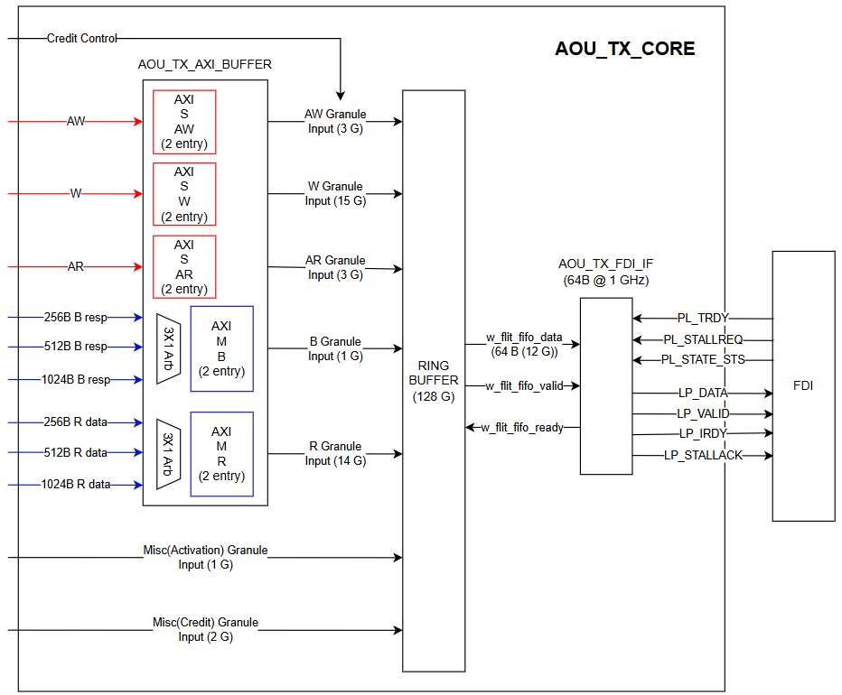
Figure 2 shows the simplified block diagram of single RP AOU_TX_CORE. The module receives AXI messages for Remote Die. AOU_TX_AXI_BUFFER captures AXI messages from the system bus. When AOU_TX_CORE obtains sufficient credit from AOU_CRD_CTRL, it packs the AXI message into an AOU message and stores it in the ring buffer. Once there is enough space to hold all messages, messages are stored to the ring buffer in parallel. The ring buffer subsequently performs handshake operations with the FDI interface.
TX_CORE QoS Scheme
Figure 3 shows the arbitration path used to select among resource-plane requests.
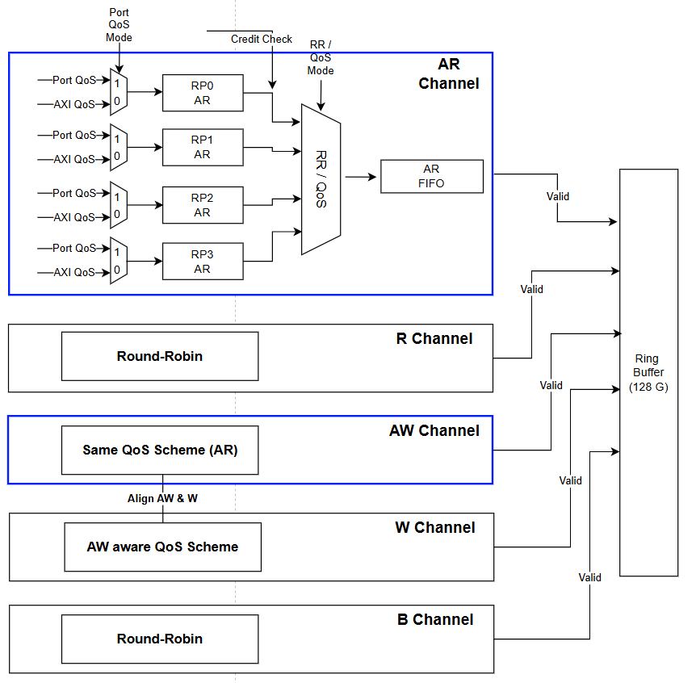
When multiple RP requests are issued from the TX core, a QoS scheme is applied. The TX core supports three QoS schemes: Round-Robin, Port QoS, and AXI QoS. Each transaction supports three QoS level: High, Normal, Low.
Round-Robin (ARB_MODE = 2'b00) : Round-robin arbitration between valid RP. When a handshake occurs, the RP that will receive the next grant is determined.
Figure 4 illustrates grant rotation among valid resource-plane requests.
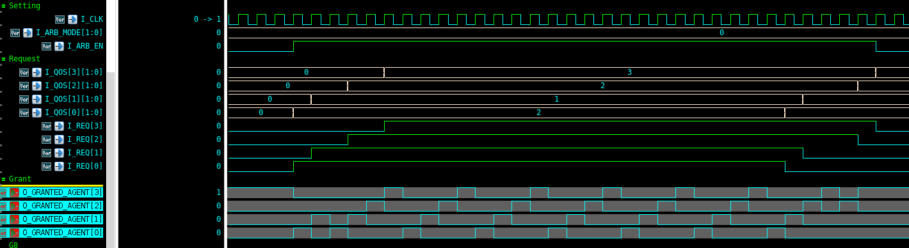
Port QoS (ARB_MODE = 2'b01): For each RP, the QoS level is configured by an SFR. Arbitration is performed based on the QoS value is the SFR. The AXI QoS field is not used for arbitration.
The port QoS is divided into three levels: High, Normal, and Low priority. Port QoS can be configured by setting PRIOR_RP_AXI.PRx_PRIOR. A 2-bit field is used for QoS and supports values from 1 to 3. If the field is set to 0, it is treated as 1.
By default, arbitration is performed in the order High → Normal → Low. If a timeout occurs while a request is at Normal or Low priority, the request is promoted and treated as High priority. Timeout value can be configured by setting PRIOR_TIMER.TIMER_THRESHOLD. The resolution used for timeout determination can be configured through PRIOR_TIMER.TIMER_RESOLUTION.
If multiple RPs have the same priority, arbitration among them is performed in a round-robin manner.
Figure 5 illustrates arbitration using the configured resource-plane priorities.
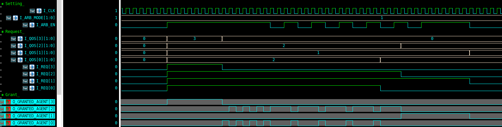
AXI QoS (ARB_MODE = 2'b10): For each RP, the QoS level is determined by the value of the AXI QoS field. Arbitration is performed based on the AXI QoS value. For the 4-bit AXI QoS field, boundary of High priority and Normal Priority can be configured by SFR setting. The port QoS is divided into three levels: High, Normal, and Low priority. By default, arbitration is performed in the order High → Normal → Low. If a timeout occurs while a request is at Normal or Low priority, the request is promoted and treated as High priority. If multiple RPs have the same priority, arbitration among them is performed in a round-robin manner.
Figure 6 illustrates arbitration using the AXI QoS fields.
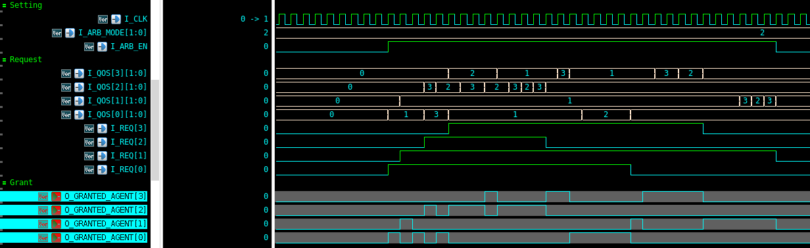
RX_CORE
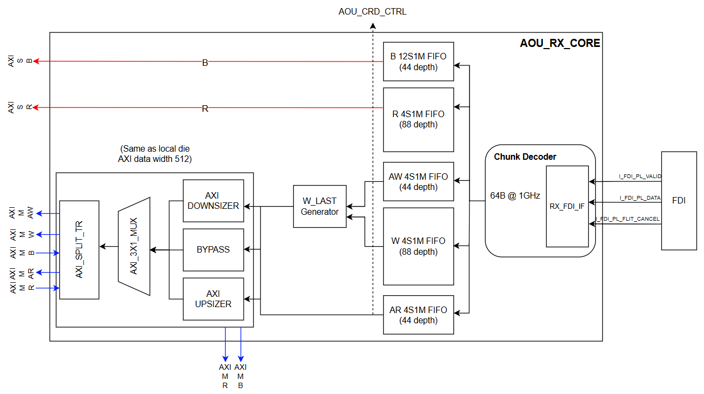
Figure 7 shows the simplified block diagram of AOU_RX_CORE. AOU_RX_CORE is a submodule that interfaces directly with the D2D adapter, receiving I_FDI_PL_VALID, I_FDI_PL_DATA, and I_FDI_PL_FLIT_CANCEL signals to determine the validity of incoming chunks, and unpacking messages in accordance with the AOU specification. Within RX_CORE, there is a submodule called RX_FDI_IF, which is designed to handle flit cancel as defined in the UCIe specification. This module forwards only valid chunks to the Chunk Decoder.
To ensure that the local die can support AXI transfers regardless of the AXI data width of the remote die, AOU_RX_CORE integrates both Downsizer and Upsizer modules internally.
AOU_RX_CORE includes a splitter that can divide burst lengths so that AXI messages with any burst length from the remote die can be supported on the local bus. The AW, W, and AR messages received from the remote die are sent to the AXI Manager interface, while the B and R messages received from the remote die are directed to the AXI Subordinate interface. The R data may be smaller than the local die AXI data width depending on the ARSIZE of the corresponding AR requests, but R 4M1S FIFO duplicate values so that it is delivered to the AXI Subordinate interface with the same width as the local die AXI data width. Furthermore, the B responses corresponding to the AW and W AXI transfers issued through the Manager interface are routed into the AXI_3X1_MUX before being sent to the AOU_TX_CORE.
As illustrated in the figure above, the granularity of data transmitted from the FIFO, whether directed to the bus or to the AXI_3X1_MUX, is conveyed to the AOU_CRD_CTRL.
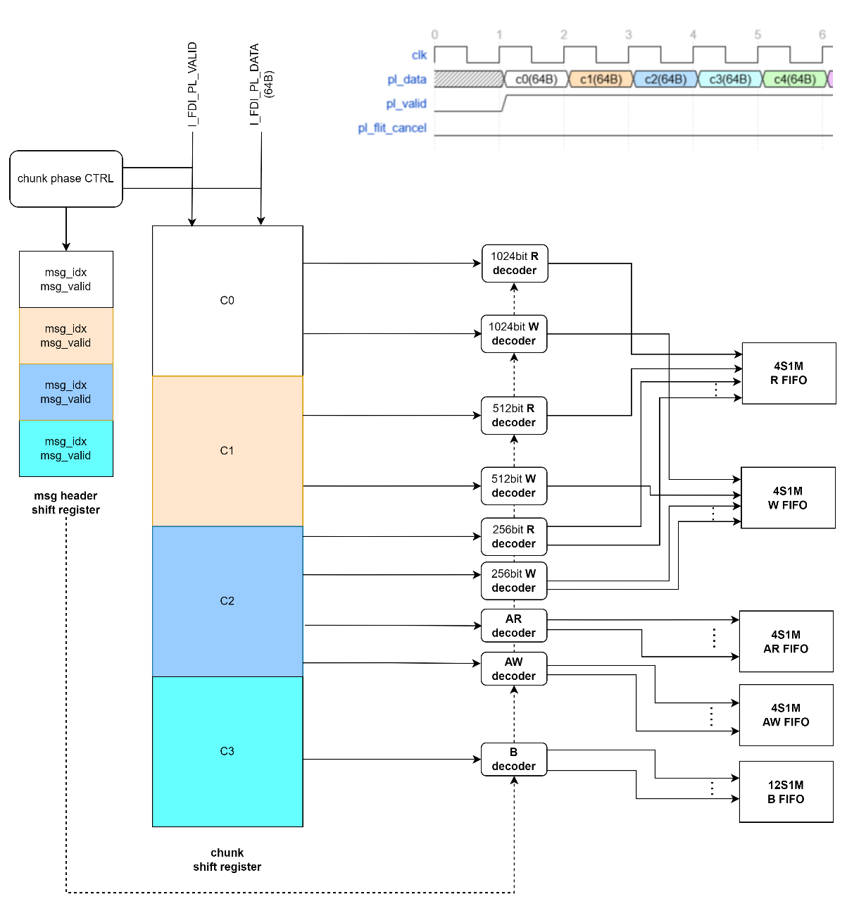
Figure 8 shows the architecture of the Chunk Decoder which is central submodule of RX_CORE. It consists of shift registers and multiple decoders that decode each message, based on the received valid chunk along with its associated msg_idx and msg_valid information. Since AXI messages differ in the number of granules, the time required for decoding also varies.
For example, a B message has a size of 1 granule and can therefore be decoded immediately once a valid chunk is received from RX_FDI_IF. In contrast, Rdata or Wdata, which have a data width of 1024 bits, require 27-30 granules, and thus cannot be decoded immediately. Instead, they are decoded after approximately three cycles. Because messages of 27-30 granules may span up to four flits during transmission.
Message FIFO
Figure 9 shows the data FIFO organization.
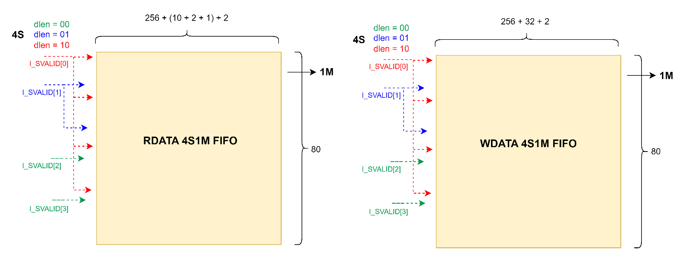
Figure 10 shows the request and response FIFO organization.
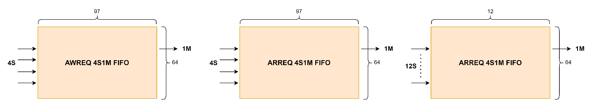
The Turn-Around-Time(TAT) of AOU_CORE, including the D2D adaptor, is approximately 40 ns (equivalent to 40 cycles at 1 GHz). Therefore, the depth of the AW, AR, and B FIFOs is set to 44 regarding the margin.
The width of the Req and Resp FIFOs is equal to the length of the corresponding message. Since 12 granules are currently being decoded at once, up to 4 AW/AR requests and up to 12 B responses can be written into the FIFO in a single cycle. Therefore, the AW/AR FIFO is implemented as a 4S1M FIFO and B FIFO is implemented as a 12S1M FIFO.
In contrast, for the Wdata and Rdata FIFOs, the FIFO width and depth is defined differently.
The width of a data message varies depending on the bus data width. Therefore, the width of the Data FIFO corresponds to the message width in the case of the minimum bus data width.
For example, the width of the RDATA FIFO is 279 bits, which consists of 256 bits for the minimum bus data width, 10 bits for RID, 2 bits for RRESP, 1 bit for RLAST, and additional sdlen 2 bits to identify message width.
In aspect of WDATA FIFO, the width is 290bit. It contains 256 bits for the minimum bus data widths, 32bits for the minimum strb data widths, and additional sdlen 2bits to identify message width.
If the data received from the remote die has sdlen of 0(256bit data), the message will be stored in a single entry of the DATA FIFO. If the data received from the remote die has sdlen of 1(512bit data), the message will be stored across two entries of the Data FIFO. Similarly, if the data received from the remote die has sdlen of 2(1024bit), the message will be stored across four entries of the Data FIFO.
In addition, the depth of the Data FIFO is not 44. The depth has been determined under the assumption that the current bus data width is 512 bits. When the bus data width is 512 bits, a W message occupies 15 granules. Since the decoder in RX_CORE can decode 12 granules per cycle, the maximum W message can reach the FIFO once every 1.25 cycles (15G ÷ 12G/cycle = 1.25 cycles). Furthermore, as mentioned above, when the bus data width is 512 bits, each message is stored across two FIFO entries. Therefore, if the maximum turnaround time (TAT) to be covered is 50 ns (50 cycles), the depth can be set to 80 (50 / 1.25 x 2 = 80). Regarding the margin, Data FIFO's depth is set to 88.
When FDI_CONFIG selects a 1024b (128B) FDI interface (FDI_CFG_SP_128B or FDI_CFG_TP_64B_128B), the per-chunk granule rate roughly doubles, so the per-RP RP*_RX_W_FIFO_DEPTH / RP*_RX_R_FIFO_DEPTH parameter defaults are bumped to 140 entries to keep the same effective TAT margin. See the Integrator Guide for the parameter defaults.
FIFOs are allocated for each RP, and the depth of the FIFOs for each RP is configurable.
Data width converter
Overview
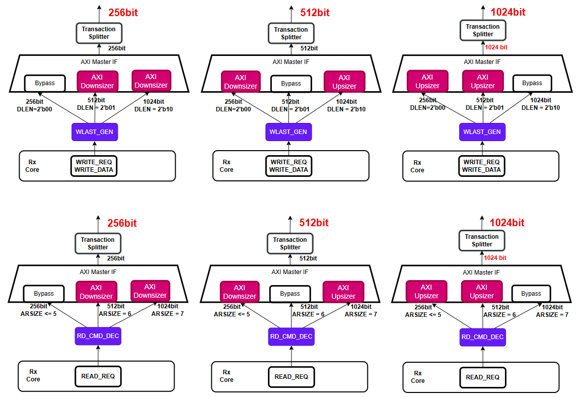
According to the AoU specification, even if the data width differs between chips, they must be able to transmit AXI transfers to each other. Because the remote die may issue read or write transactions with data widths of 256, 512, or 1024 bits, the local die is responsible for converting the data to align with its own bus data width. The response must then be reformatted to match the original request size before being returned.
Within AOU_CORE_TOP, the AOU_AXI4MUX_3X1_TOP module performs this function. Figure 11 shows how the structure of the Bypass, AXI Downsizer, and AXI Upsizer varies depending on the AXI data width of the local die.
Width Adaptation Paths
Three slave channel slots correspond to three possible remote data widths: 256 bits, 512 bits, and 1024 bits. Which slot uses an upsizer, bypass, or downsizer depends on the local die's AXI_DATA_WD parameter. A dedicated variant of the width-adapter module is instantiated for each supported local width:
Table 1 identifies the width-adapter variant and conversion path for each local and remote data width.
| Local AXI_DATA_WD | Variant instantiated | CH0 (256b remote) | CH1 (512b remote) | CH2 (1024b remote) |
|---|---|---|---|---|
256 |
AOU_AXI4MUX_3X1_256 |
Bypass |
Downsizer |
Downsizer |
512 |
AOU_AXI4MUX_3X1_512 |
Upsizer |
Bypass |
Downsizer |
1024 |
AOU_AXI4MUX_3X1_1024 |
Upsizer |
Upsizer |
Bypass |
Write path routing: The DLEN field embedded in the Write Data message indicates the original data width. AOU_AXI4MUX_3X1_TOP uses this field to steer write data and strobes to the correct channel slot (and therefore through the correct width adapter).
Read path routing: The ARSIZE field of the Read Request message determines which channel slot handles the read response. The 3:1 mux selects the active slave R channel based on a 2-bit selector derived from ARSIZE.
The upsizer (AOU_AXI_UP) packs multiple narrow beats into a single wider beat, recalculating AWLEN/ARLEN accordingly. The downsizer (AOU_AXI_DOWN) splits a single wide beat into multiple narrower beats. Both modules regenerate WLAST internally using a beat counter that compares the current W beat count against the recalculated burst length.
WLAST Regeneration
The AoU Write Data message does not carry a WLAST signal. The AOU_AXI_WLAST_GEN module regenerates WLAST by aligning the phases of WriteReq and Write Data messages. It operates upstream of the width adapters in the RX-to-AXI path within AOU_CORE_RP.
The module uses I_S_WDLENGTH (derived from the DLEN field) to determine the number of W beats expected for each AW transaction:
-
When AWLEN == 0 (single-beat burst), WLAST is asserted immediately on the first AW/W handshake.
-
For multi-beat bursts, WLAST is asserted when the internal remaining beat counter r_m_awch_remain_beat reaches 1.
In addition to AOU_AXI_WLAST_GEN, the upsizer and downsizer modules (AOU_AXI_UP and AOU_AXI_DOWN) each contain their own WLAST generation logic to account for the changed burst length after width conversion.
AXI Transaction Splitter
Overview
In the AoU specification, the AXI LEN field is fixed at 8 bits, allowing the remote die to issue burst transactions up to the maximum supported by an 8-bit AXI LEN. However, because the local die's bus may not support the full 8-bit burst length, inbound AXI transactions must be split into bursts that the local bus can handle and then reassembled to match the original request.
Even if the burst length increases as a result of data-width conversion, the AXI transactions are always split to ensure they do not exceed the maximum burst length supported by the local bus.
The splitter (AOU_AXI_SPLIT_TR) sits between the 3:1 arbitration mux and the AXI Aggregator inside AOU_AXI4MUX_3X1_TOP. One instance exists per RP, and the maximum burst length can be configured independently for each RP through the AOU_SPLIT_TR_RPn SFRs.
Note: The AOU_CON0.AXI_SPLIT_TR_EN field exists in the SFR but is currently tied to 1'b0 in AOU_CORE_RP, making the splitter always active. The enable bit is reserved for future use.
Burst Splitting
The splitter uses internal address-generator submodules (aou_axi_split_addrgen_ar for reads, aou_axi_split_addrgen_aw for writes) to decompose a single long burst into multiple sub-bursts, each no longer than MAX_AxBURSTLEN + 1 beats. Addresses for each sub-burst are computed from the original base address, burst type, and size.
The MAX_AxBURSTLEN value must be of the form 2^n - 1. Legal values are:
Table 2 lists the supported maximum burst-length settings and resulting beat counts.
| MAX_AxBURSTLEN | Max beats per sub-burst |
|---|---|
0 |
1 |
1 |
2 |
3 |
4 |
7 |
8 |
15 |
16 |
31 |
32 |
63 |
64 |
127 |
128 |
255 |
256 (no split) |
ID width: The splitter reserves 2 bits from the AXI ID for internal sub-burst tracking. Master-side IDs are therefore ID_WD - 2 bits wide. The 2 extra bits allow the splitter to correlate responses from up to 4 outstanding sub-bursts per original transaction.
Response Reassembly
Read path: The aou_split_tr_arch reorder buffer tracks the sub-burst sequence for each outstanding read. Slave-side RLAST is asserted only when the final beat of the last sub-burst is received, reconstructing the original burst boundary. Intermediate RLAST signals from the master side are consumed internally.
Write path: B responses from sub-bursts are merged. The splitter tracks outstanding write sub-bursts with r_wr_pending_cnt and returns a single B response to the slave side once all sub-bursts have completed. If any sub-burst returns an error (|I_M_BRESP_RS), the merged BRESP_ERR flag is set, propagating the error to the slave-side response.
ID mismatch detection: The splitter exports DEST_TABLE_RID_ERR and DEST_TABLE_BID_ERR signals that flag responses with IDs not matching any outstanding transaction. These feed the INT_MI0_ID_MISMATCH interrupt source via AOU_AXI4MUX_3X1_TOP.
SFR Configuration
Table 3 identifies the SFR fields associated with burst splitting.
| SFR | Field | Description |
|---|---|---|
AOU_CON0 |
AXI_SPLIT_TR_EN |
Global enable (reserved, tied inactive in current RTL) |
AOU_SPLIT_TR_RP0 |
MAX_AWBURSTLEN |
Max write burst length for RP0 (must be 2^n - 1) |
AOU_SPLIT_TR_RP0 |
MAX_ARBURSTLEN |
Max read burst length for RP0 (must be 2^n - 1) |
AOU_SPLIT_TR_RP1 |
MAX_AWBURSTLEN / MAX_ARBURSTLEN |
Same for RP1 |
AOU_SPLIT_TR_RP2 |
MAX_AWBURSTLEN / MAX_ARBURSTLEN |
Same for RP2 |
AOU_SPLIT_TR_RP3 |
MAX_AWBURSTLEN / MAX_ARBURSTLEN |
Same for RP3 |
These SFRs must be configured before activation and must not be changed during normal operation.
Write Early Response Controller
Overview
The AOU_EARLY_BRESP_CTRL_AWCACHE module sits between the local AXI subordinate interface and the AOU TX datapath. One instance exists per RP and can be independently enabled or disabled via the per-RP WRITE_EARLY_RESPONSE_RPn.EARLY_BRESP_EN SFR.
When enabled, the module returns an early B response (BRESP = OKAY) to the local AXI manager as soon as both the write address (AW) and the last write data beat (W with WLAST) have been received at the AXI subordinate port -- before the write is packed into AoU messages, transmitted over FDI, and completed on the remote die. This reduces the write latency seen by the local requester at the cost of deferred error reporting.
Early response applies only to bufferable writes (AWCACHE[0] = 1). Non-bufferable writes (AWCACHE[0] = 0) pass through the module unchanged: the AW, W, and B channels are forwarded directly between the local AXI interface and the AOU TX datapath with no early response generated, and the actual BRESP from the remote die is returned to the local AXI manager as normal.
Transaction Flow -- Normal Case
Figure 12 shows the message flow for a bufferable write when the remote die returns a successful response.
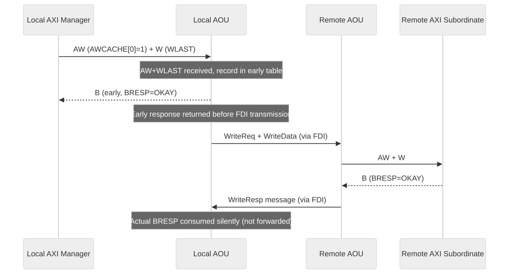
When the actual B response arrives from the remote die for a transaction that already received an early response, the controller consumes it internally: O_AXI_S_BVALID is held low (the local AXI manager sees no second response) while O_AXI_M_BREADY is asserted high (the response is drained from the AOU RX path).
Transaction Flow -- Error Case
If the actual B response from the remote die carries an error (BRESP[1] = 1, indicating SLVERR or DECERR), the error cannot be reported via the AXI B channel because the early OKAY response was already returned to the local AXI manager. Instead, the error is reported via interrupt and SFR capture.
Figure 13 shows how a remote write error is consumed after the local manager has received an early response.
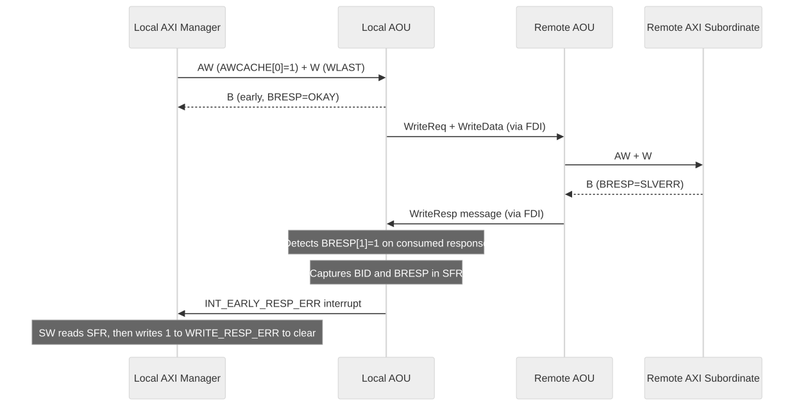
The interrupt fires when the consumed response has BRESP[1] = 1. SW must:
-
Read WRITE_EARLY_RESPONSE_RPn.WRITE_RESP_ERR_ID_INFO to identify the failing transaction's AXI ID.
-
Read WRITE_EARLY_RESPONSE_RPn.WRITE_RESP_ERR_TYPE_INFO to identify the error type (SLVERR or DECERR).
-
Write 1 to WRITE_EARLY_RESPONSE_RPn.WRITE_RESP_ERR (W1C) to clear the interrupt.
ID Ordering
The AOU_EARLY_TABLE inside the controller maintains a tracking table with WR_MO_CNT entries (matching the subordinate write outstanding count). Each entry records:
Table 4 defines the fields tracked for each outstanding write.
| Field | Purpose |
|---|---|
id |
AXI write ID (AWID) |
bufferable |
AWCACHE[0] flag |
pending |
Transaction is in flight (AW accepted, B not yet received from remote) |
same_id_tr_cnt |
Count of older pending transactions with the same AXI ID that have not yet been early-responded or actually responded |
early_go |
Set when same_id_tr_cnt reaches 0, indicating this entry is eligible for early response |
wid_numbering |
Per-ID sequence number for matching B responses to the correct table entry |
The early_go flag ensures that for transactions sharing the same AXI ID, early responses are issued strictly in order. A later bufferable transaction with the same ID waits until all prior same-ID transactions have been responded to (either via early response or actual remote BRESP). This preserves AXI ID ordering even when bufferable and non-bufferable writes with the same ID are interleaved.
Write-Outstanding Queue Backpressure
The backpressure mechanism described in this section is only active when the early response feature is enabled (EARLY_BRESP_EN = 1). When disabled, the module is a transparent pass-through: all AW, W, and B signals are wired directly between the subordinate and manager interfaces with no outstanding-count gating, and write depth is bounded only by whatever the downstream AOU TX datapath can accept.
When enabled, the early table has WR_MO_CNT entries (default 32, set by the S_WR_MO_CNT parameter). Every write that enters the controller -- bufferable or non-bufferable -- occupies one table entry from the time WLAST is accepted until the actual B response arrives from the remote die and is consumed.
Issuing an early B does not free the table entry. The entry remains occupied (pending = 1, out = 1) until the real remote B is received. The table depth therefore limits the total number of writes in flight across the FDI link, not just the number awaiting early response.
When r_aw_cnt == WR_MO_CNT, AWREADY and WREADY are deasserted toward the local AXI manager, stalling both the AW and W channels. The AOU TX datapath and FDI link continue operating normally during this time -- only new write acceptance is blocked. As actual B responses arrive from the remote die and table entries are freed, AWREADY and WREADY reassert and the manager may resume issuing writes.
The O_PENDING_CNT_OVER signal (exposed via the interrupt controller) fires if a write handshake is attempted while the counter is already at the limit, serving as a diagnostic for system-hang detection.
Figure 14 shows the write queue filling, stalling, and draining as tracking entries become available.
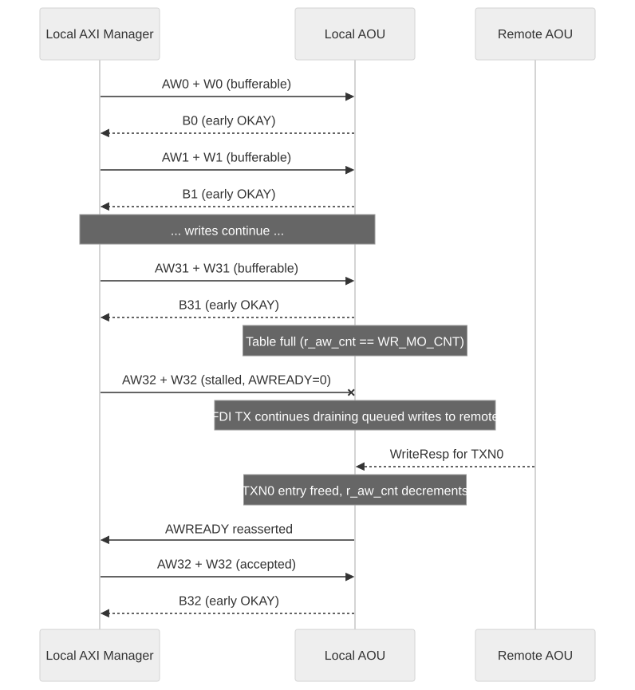
Mixed Ordering -- Bufferable Before Non-Bufferable (Same ID)
When a bufferable write (TXN0) is followed by a non-bufferable write (TXN1) on the same AWID, the controller handles them as follows:
-
TXN0 enters the table with same_id_tr_cnt = 0 and early_go = 1. Its early B is eligible immediately and is returned to the manager.
-
After TXN0's early B is issued, out is set to 1. TXN1 enters the table with bufferable = 0. The same_id_tr_cnt computation excludes entries with out = 1, so TXN1 sees same_id_tr_cnt = 0.
-
TXN1 is non-bufferable, so no early B is generated for it regardless of early_go. It waits for the actual remote B.
-
The wid_numbering field ensures actual B responses are matched in issue order: TXN0 has wid_numbering = 0, TXN1 has wid_numbering = 1.
-
When TXN0's actual B arrives, O_EarlyResponse_Consume = 1 (bufferable entry at the read pointer), so the response is consumed silently. TXN1's wid_numbering decrements to 0.
-
When TXN1's actual B arrives, O_EarlyResponse_Consume = 0 (non-bufferable), so the response is forwarded to the subordinate as a normal BVALID.
The local AXI manager sees: early B for TXN0 first, then actual B for TXN1 -- correct AXI ID ordering is preserved.
Figure 15 shows response ordering when a bufferable write precedes a non-bufferable write on the same AXI ID.
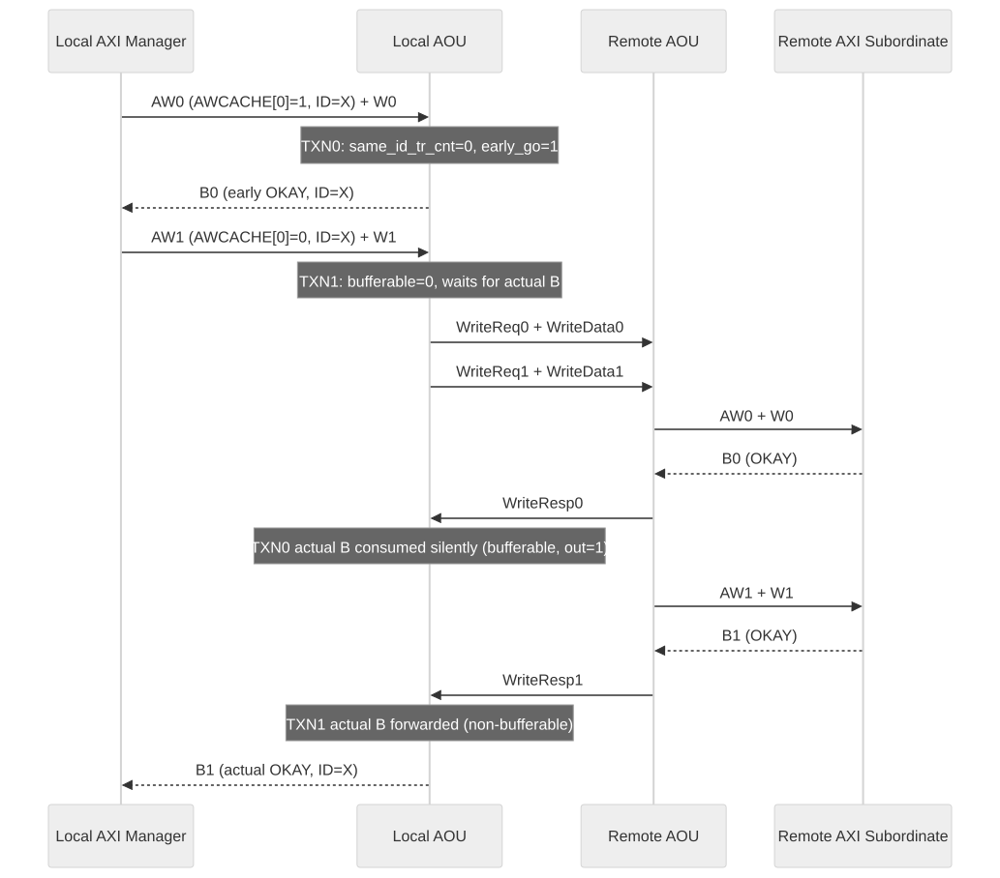
Mixed Ordering -- Non-Bufferable Before Bufferable (Same ID)
When a non-bufferable write (TXN0) is followed by a bufferable write (TXN1) on the same AWID, the early response for TXN1 is delayed until TXN0's actual B has been received.
-
TXN0 enters the table with bufferable = 0, out = 0. No early B is generated (not bufferable).
-
TXN1 enters the table with bufferable = 1. Because TXN0 is still pending and ~out, TXN1 sees same_id_tr_cnt = 1 and early_go = 0. The early B for TXN1 is blocked.
-
When TXN0's actual B arrives from the remote die, it is forwarded to the subordinate (non-bufferable pass-through, O_EarlyResponse_Consume = 0). The table update loop decrements TXN1's same_id_tr_cnt from 1 to 0, setting early_go = 1.
-
On the following cycle, TXN1's early B becomes eligible and is issued to the manager.
This is the key latency impact of mixed-cacheability ordering: the bufferable write's early response is delayed until the preceding non-bufferable same-ID write fully completes its round trip through the remote die. The early-response latency benefit is lost for that transaction. Software or interconnect designers should be aware that interleaving non-bufferable writes ahead of bufferable writes on the same ID negates the early-response advantage for those bufferable transactions.
Figure 16 shows response ordering when a non-bufferable write precedes a bufferable write on the same AXI ID.
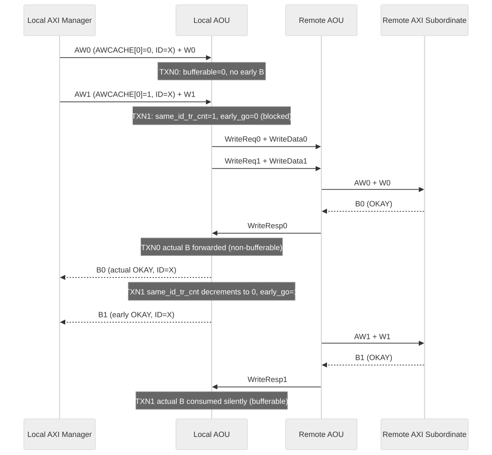
Enable/Disable Procedure
The EARLY_BRESP_EN SFR may be written at any time, but the internal enable (r_early_bresp_en) only transitions when it is safe to do so:
-
Confirm WRITE_EARLY_RESPONSE_RPn.WRITE_RESP_DONE = 1 (no pending write transactions; r_aw_cnt == 0).
-
Set or clear EARLY_BRESP_EN via APB write.
-
The internal register transitions on the next clock edge where O_BRESP_DONE is asserted and no AW handshake is in progress. This guarantees that the mode change does not occur mid-transaction.
SFR Fields
The WRITE_EARLY_RESPONSE_RPn register (one per RP: RP0 at 0x0028, RP1 at 0x0040, RP2 at 0x0058, RP3 at 0x0070) contains:
Table 5 defines the per-resource-plane early-response controls.
| Field | Bits | Access | Description |
|---|---|---|---|
EARLY_BRESP_EN |
[0] |
RW |
Enable early B response for bufferable writes on this RP. |
WRITE_RESP_ERR_ID_INFO |
[10:1] |
RO |
AXI ID of the transaction whose actual BRESP had an error. |
WRITE_RESP_ERR_TYPE_INFO |
[12:11] |
RO |
BRESP error type (2'b10 = SLVERR, 2'b11 = DECERR). |
WRITE_RESP_ERR |
[13] |
W1C |
Write 1 to clear the INT_EARLY_RESP_ERR interrupt. |
WRITE_RESP_DONE |
[14] |
RO |
1 when no write transactions are pending (r_aw_cnt == 0). |
See the full register map for the complete SFR listing.
AXI Aggregator
Overview
The AXI Aggregator (AOU_AGGREGATOR) combines narrow read and write data into full-width bus beats to improve bus utilization. It sits downstream of the AXI Transaction Splitter and is the last processing stage before the AXI manager port inside AOU_AXI4MUX_3X1_TOP. One instance exists per RP.
When enabled, the aggregator promotes AWSIZE/ARSIZE to the full bus width and recalculates AWLEN/ARLEN accordingly. For example, an incoming AR with size 256 bits and burst length 16 is converted to size 1024 bits and burst length 4, then issued on the AXI manager interface. When R data returns, it is split to restore the original format. The same principle applies to writes.
When disabled via the per-RP AOU_CON0.RPn_AXI_AGGREGATOR_EN SFR, all master-side signals bypass the aggregator entirely and flow directly to the AXI manager port without modification.
Write Aggregation
Write aggregation is activated when both conditions are met:
-
AWSIZE is narrower than the full bus width (AXSIZE < $clog2(DATA_WD/8)).
-
AWLEN is non-zero (multi-beat burst).
When activated, the aggregator:
-
Promotes AWSIZE to the full bus width.
-
Recalculates AWLEN based on the ratio between original and promoted sizes.
-
OR-merges WDATA and WSTRB across consecutive narrow beats until a full-width beat is assembled, then emits the merged beat on the master W channel.
-
AWBURST is passed through unchanged.
A depth-16 synchronous FIFO decouples the AW and W channels. The AW is issued on the master side only after confirming that sufficient W FIFO space is available for the recalculated AWLEN, preventing deadlocks when the downstream bus back-pressures the W channel.
Figure 17 shows narrow write beats merging into a wider downstream transfer.
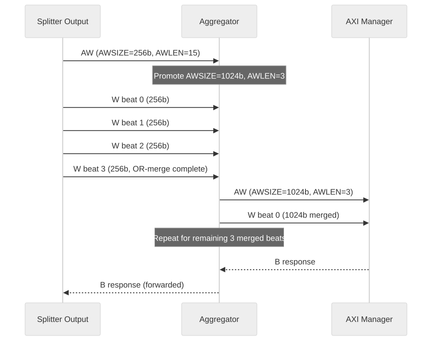
Read Aggregation
Read aggregation follows the same size-promotion logic as writes. ARSIZE and ARLEN are promoted to the full bus width, and ARBURST is passed through (the aggregator does not restrict burst type to INCR).
The AOU_AGGREGATOR_INFO submodule tracks outstanding AR transactions. For each issued AR, it records the original burst geometry (size, length) so that when wide R data returns from the manager side, the module can regenerate the correct slave-side RLAST at the original burst boundaries. Wide R beats are presented to the slave side multiple times (once per original narrow beat) with the appropriate byte-lane selection.
SFR Fields
Table 6 identifies the resource-plane aggregation enables.
| SFR | Field | Bits | Description |
|---|---|---|---|
AOU_CON0 |
RP0_AXI_AGGREGATOR_EN |
[20] |
Enable aggregator for RP0 |
AOU_CON0 |
RP1_AXI_AGGREGATOR_EN |
[21] |
Enable aggregator for RP1 |
AOU_CON0 |
RP2_AXI_AGGREGATOR_EN |
[22] |
Enable aggregator for RP2 |
AOU_CON0 |
RP3_AXI_AGGREGATOR_EN |
[23] |
Enable aggregator for RP3 |
These fields must be configured before activation and must not be changed during normal operation.
Credit Controller
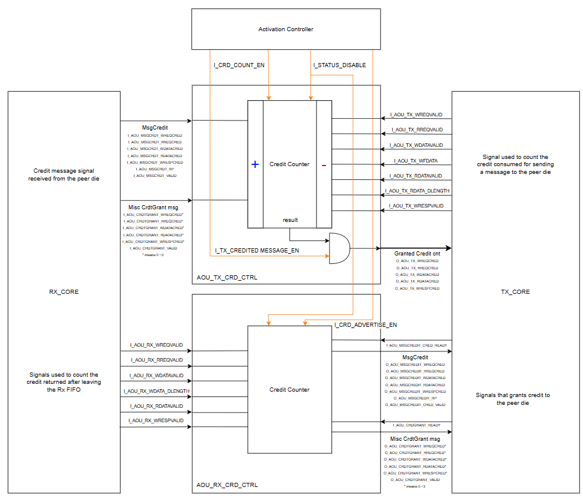
Figure 18 shows the simplified block diagram of AOU_CRD_CTRL. The Credit Controller manages both the credits granted to the remote die and the credits received from the remote die. It considers the credit consumed when the TX CORE packs an AXI message into the ring buffer, and considers the credit returned when an AXI message is popped from the RX CORE FIFO. The credit controller always grants the maximum credits available and uses only one of the two methods - either the Misc Credit Grant messages or the Message Credit field - to grant credits.**
Rx Credit**
The local die is responsible for tracking the credits advertised to the remote die and issuing new credits once they are returned. Rx Credit accounts for both advertised and returned credits and is managed by the AOU_RX_CRD_CTRL module inside AOU_CRD_CTRL.
More specifically, Rx Credit refers to the credit provided by the local die to the remote die. The remote die uses this credit to transmit messages, which are then received and unpacked by the local Rx Core. Because the processing and unpacking occur within the Rx Core, this credit is defined as Rx Credit. The maximum available Rx Credit is determined by the depth of the Rx FIFO.
To ensure that no data is lost under flow control, credits shall not be granted when sufficient buffer space is unavailable. Therefore, the amount of credit advertised shall be determined conservatively by considering the worst-case condition. Here, the worst case is defined as the condition in which the smallest amount of credit can be advertised. Consequently, the maximum available is specified as the minimum value among all possible cases when credits are fully advertised:
MAX AVAILABLE CREDIT = min(max advertised credit case1, max advertised credit case2, ..., max advertised credit caseN)
Assuming all PROFEXTLEN values are set to 0, the maximum advertised credit is calculated as follows: For WREQ, RREQ, WRESPCRED, each FIFO entry is considered to be allocated according to the granule size of each message.
RX AW MAX CREDIT = RX AW FIFO DEPTH x WriteReq Granules RX AR MAX CREDIT = RX AR FIFO DEPTH x ReadReq Granules RX B MAX CREDIT = RX B FIFO DEPTH x WriteResp Granules
In the case of WDATA, data widths of 256, 512 or 1024 may be received. Separate FIFOs are provided for data and for strobe, each with the same FIFO depth. Each FIFO entry is 256 bits wide for DATA and 32 bits wide for STRB, ensuring efficient utilization of the FIFO. Accordingly, 512-bit width data occupies two entries, while 1024-bit width data occupies four entries. As illustrated in Figure 18, for non-Writefull message types, WDATA is stored in the DATA FIFO and WSTRB is stored in the STRB FIFO.
Figure 19 illustrates the separate storage of write data and write strobes.
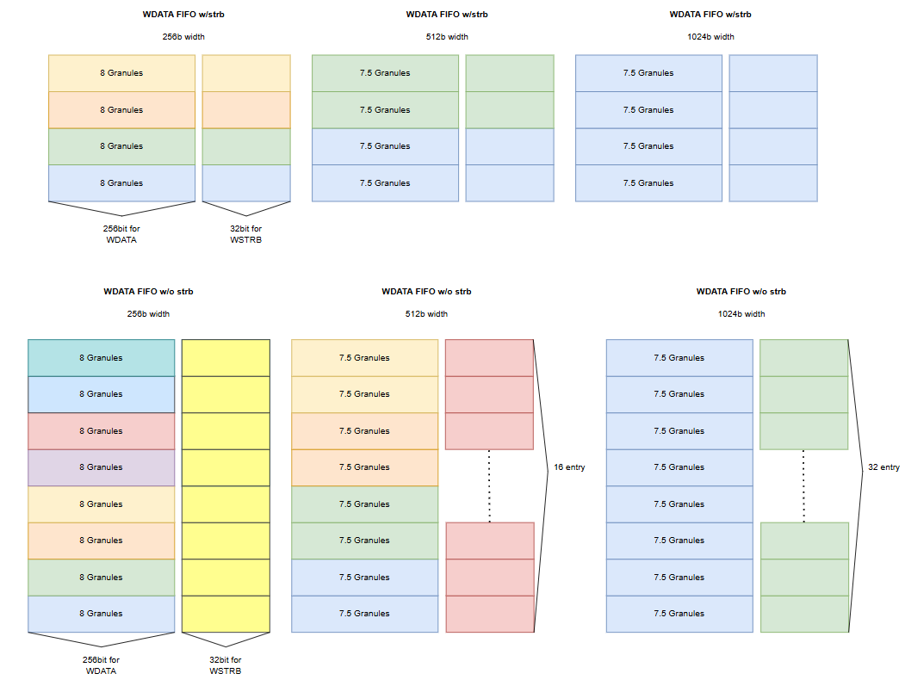
Occupying Data entry per message = WDATA Width / DATA FIFO Width
| WDATA width | Granule size per message | Occupying Data entry per message | Granules per Data FIFO entry | Granules per Strb FIFO entry | Granules per FIFO entry |
|---|---|---|---|---|---|
256b |
8 |
1 |
8 |
- |
8 |
512b |
15 |
2 |
7.5 |
- |
7.5 |
1024b |
30 |
4 |
7.5 |
- |
7.5 |
| WDATA width | Granule size per message | Occupying Data entry per message | Granules per Data FIFO entry | Granules per Strb FIFO entry | Granules per FIFO entry |
|---|---|---|---|---|---|
256b |
7 |
1 |
7 |
- |
7 |
512b |
14 |
2 |
7 |
- |
7 |
1024b |
27 |
4 |
6.75 |
- |
6.75 |
Table 7 and Table 8 illustrates all possible writedata, writedatafull message types and the credit calculation when messages consist solely of one type. The minimum advertised credit occurs when only 1024bit writedatafull messages are received. According the maximum available credit for WDATA is defined as follows:
RX W MAX CREDIT = (RX W FIFO DEPTH / 4) x WriteData Full1024bit Granules
In the case of RDATA, Receiving RDATA from the remote die implies that the local die has already issued a ReadReq message. The ARSIZE used when sending is determined by the AXI_DATA_WD of the local die. For example, if AXI_DATA_WD is 512, the AR will request RDATA of 512 bits or less, and the received RDATA will therefore be 512 or 256 bits wide.
Figure 20 illustrates read-data storage at different AXI data widths.
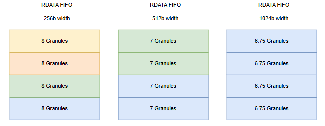
Table 9 relates read-data width to FIFO occupancy and granule credits.
| RDATA Width | Granule size | Occupying entry (RDATA width / FIFO width) | Granules per FIFO entry (Granule size / Occupying entry) |
|---|---|---|---|
256 |
8 |
1 |
8 |
512 |
14 |
2 |
7 |
1024 |
27 |
4 |
6.75 |
Similarly, for RDATA, credits must be advertised conservatively by considering the maximum data width associated with AXI_DATA_WD. As AXI_DATA_WD increases, the maximum credit that can be advertised decreases. Therefore, credit shall always be calculated based on AXI_DATA_WD. For example, if AXI_DATA_WD is 512, the possible RDATA widths are 256, 512, and credit must be determined under the conservative assumption that all RDATA widths are 512bits. Likewise, if AXI_DATA_WD is 1024, the possible RDATA widths are 256, 512, and 1024, and credits must be determined under the conservative assumption that all RDATA are 1024bits.
RX R MAX CREDIT = {RX R FIFO DEPTH / (AXI_DATA_WD / 256)} x AXI_DATA_WD RDATA Granule Size
Tx Max Credit
-
Tx Credit refers to the credit that the local die receives from the remote die. Based on this credit, the Tx Core is permitted to pack messages into flits and transmit them. For this reason, the term is defined as Tx Credit.
-
Tx Credit is managed by the AOU_TX_CRD_CTRL in AOU_CRD_CTRL, which is responsible for counting the credits received from the remote die and tracking the credits consumed during message packing.
-
It is recommended that Tx Max Credit parameter be set to the maximum credit value that the remote die is capable of granting.
-
If Tx Max Credit is configured to a value lower than the maximum credit issued by the remote die, credit accounting shall be limited to the Tx Max Credit value. In this case, flow control operates strictly within the range defined by Tx Max Credit, regardless of the remote die's capability.
-
If Tx Max Credit is configured to a value greater than or equal to the maximum grantable credit of the remote die, the local die can fully utilize all credits actually granted by the remote die.
-
This behavior implies that the Tx Max Credit setting is not dependent on the remote die's internal configuration. The local die shall simply make use of the credits that are actually granted to it.
-
Credit Advertisement Mechanism
Upon receipt of an ActivateReq from the remote die, AOU_CORE_TOP responds with an ActivateAck and, at the same time, advertises credit through a Misc CreditGrant Message. Only the initial credit advertisement is performed through this Misc message. Because only a single Resource Plane is implemented, after the initial advertisement, subsequent credit advertisements are carried by the Message Credit field within the protocol header. In multiple-RP configuration, credit advertisement is likewise delivered exclusively through the Message Credit field within the protocol header. Credits for multiple RPs are advertised in a round-robin manner. A grant is issued only when at least one of the credit fields - wreq, wdata, rreq, rdata, or wresp - contains a non-zero value to be advertised.
Definition of Tx Credit Consumption and Rx Credit Advertisement/Return Timing
-
The Tx Credit is increased immediately upon receipt of a credit message from the Rx Core, within the updated value taking effect in the following cycle. Credit is decremented when the Tx Core packs a message and places it into the ring buffer. The consumption point is defined at the time of insertion into the per-RP Tx FIFO.
-
The AOU_RX_CRD_CTRL exchanges credit messages (PLP protocol header MsgCredit field, dedicated Misc message) with the Tx core through valid/ready signaling. Tx core asserts CRDTGRANT_READY when the Tx core can pack a Misc Credit Message or asserts MSGCREDIT_CRED_READY when a protocol header is required to be transmitted. A credit is considered advertised at the point when the credit message handshake (valid and ready both asserted) occurs. At that instant, the advertised credits are treated as already reserved for the RX FIFO. Accordingly, a credit is not considered returned when a message leaves the RX Core, but only when data is actually dequeued from the RX FIFO, releasing the previously reserved credit.
RP Remapping
Configuration Rules
The Resource Plane (RP) operates based on the smaller RP count between the local and remote dies and follows a strict one-to-one mapping. RP assignments are configured through the DEST_RP SFR. The values of RP3_DEST, RP2_DEST, RP1_DEST, and RP0_DEST must be unique, and for any RP that is utilized, the configuration on the local and remote dies must be symmetrical.
This configuration must remain static and must be programmed before activation. It must not be altered during normal operation.
When the local and remote dies have different RP_COUNT values, the effective RP count is the smaller of the two. Unused RP slots in the DEST_RP register are functionally don't-care but should be set to non-overlapping values for clean credit routing (see AOU Misconfiguration Behaviour).
Figure 21 shows how resource-plane identifiers are remapped across the link.
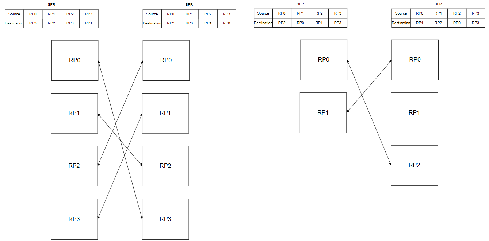
Header Encoding
For AXI messages (WriteReq, WriteData, ReadReq), the TX path (AOU_TX_AXI_BUFFER) embeds the DEST_RP field from the SFR into the destination RP field of every outgoing message header. The remote die uses this field to route the received message to the correct RP for processing.
For credit grant messages, AOU_TX_CRD_CTRL encodes the local RP index (not the DEST_RP value) so that the remote die can route returned credits to the correct local RP's credit counter. This asymmetry -- destination RP in data messages, source RP in credit messages -- is fundamental to the RP remapping scheme.
Misconfiguration Behavior
No hardware duplicate-detection logic exists for the DEST_RP register. If DEST_RP values are configured with overlapping (duplicate) entries, the credit routing logic in AOU_TX_CRD_CTRL -- which uses a unique case statement on I_RP_DEST_RP[i] -- will fall through to the default case, mapping to the RP0 credit view. This results in silent credit accounting errors rather than a flagged interrupt or error condition.
Software is responsible for ensuring uniqueness and symmetry of the DEST_RP configuration on both link partners before initiating activation.
UCIe Flit cancel mechanism
AOU_CORE supports all UCIe flit cancel mechanisms. The three cases -- retransmit, flit partially valid, and full flit cancel -- are handled by the AOU_RX_FDI_IF submodule within RX_CORE.
Figure 22 illustrates the retransmit case of UCIe flit cancellation.
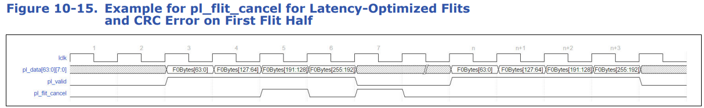
Figure 23 illustrates the partially valid flit case.
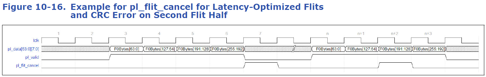
Figure 24 illustrates the full flit-cancel case.
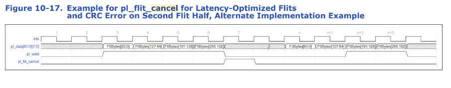
Cancel Cases
The AOU_RX_FDI_IF module uses the FDI pl_valid and pl_flit_cancel signals to determine how to handle each incoming chunk. Three cases are distinguished:
Table 10 maps the valid and cancel signals to the receive action.
| pl_valid | pl_flit_cancel | Action |
|---|---|---|
1 |
0 |
Normal: Phase counter increments. Chunk is stored in the staging buffer. |
1 |
1 |
Retransmit / Partial Valid: Phase counter decrements by 1. The staging buffer is re-aligned with {zero_data, pl_data} and a valid pattern of {1'b0, 1'b1}, replacing the previously stored partial chunk with the corrected data. |
0 |
1 |
Full Flit Cancel: Phase counter decrements by 2. Staging buffer entries are cleared. This is the strongest rollback, discarding the entire in-progress half-flit. |
RX_FDI_IF Buffering
The AOU_RX_FDI_IF module maintains a staging buffer (r_data) that is HF_PHASE_CNT entries deep, where HF_PHASE_CNT = PHASE_CNT / 2. For the default 512-bit FDI data width, PHASE_CNT = 4 and HF_PHASE_CNT = 2, so the staging buffer holds 2 chunk entries -- one half-flit of data.
A parallel valid array (r_data_valid) tracks which staging buffer entries contain valid chunk data. The output to RX_CORE is gated:
rx_chunk_data_valid = r_data_valid[1] && !pl_flit_cancel
This ensures that chunk presentation is suppressed whenever pl_flit_cancel is asserted, even if valid data exists in the staging buffer. Downstream, AOU_RX_CORE advances its phase counter (r_aou_rx_phase) only when rx_chunk_data_valid is high, so cancel-suppressed cycles stall the RX phase progression without data loss.
Timing
Cancel handling is purely combinational on the same clock edge as the FDI input signals. No additional pipeline stages are introduced beyond the 2-entry staging buffer and the phase FSM. The latency from FDI input to valid chunk presentation at RX_CORE is therefore determined solely by the half-flit fill time under normal operation.
Note: The flit_packing_state counter (a TX-side concept in AOU_TX_CORE) is unrelated to RX cancel handling. RX cancel operates entirely within AOU_RX_FDI_IF using the phase counter r_phase.
The figures below illustrate an example of how only valid chunk data is delivered to RX_CORE. Within the design, pl_data, pl_valid, and pl_flit_cancel are defined as part of the FDI interface. In contrast, rx_chunk_data and rx_chunk_data_valid represent the signals responsible for delivering valid chunks to RX_CORE.
Figure 25 shows the selection of valid chunks for RX_CORE.
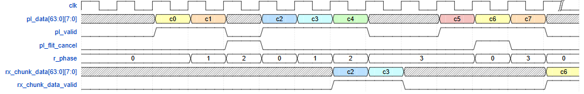